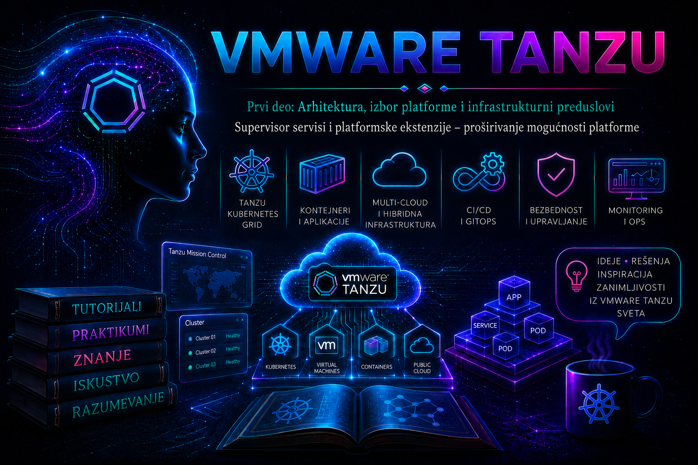

VMware & Tanzu

Prethodna lekcija prikazala je VKS klaster kao zaseban workload klaster čiji se control plane, worker čvorovi i životni ciklus ostvaruju deklarativno, preko Cluster API-ja i servisa koji radi na Supervisor-u. Ova lekcija pomera pažnju jedan nivo naviše: na mehanizam kojim se sam Supervisor proširuje sertifikovanim operatorima i dodatnim API resursima. Cilj nije da se Supervisor pretvori u opšti aplikacioni klaster, već da platformskom timu omogući kontrolisano uvođenje infrastrukturnih i platformskih sposobnosti koje su tesno povezane sa vSphere okruženjem.
Termin Supervisor Service u aktuelnoj dokumentaciji označava vSphere-sertifikovan Kubernetes operator, zajedno sa deklaracijama, verzijama, zavisnostima i pravilima životnog ciklusa potrebnim da se servis instalira na jedan ili više Supervisor-a. Servis može uvesti nove CustomResourceDefinition objekte, kontrolere, webhook-ove, servisne naloge, uloge i workload komponente. Korisnik zatim, kada mu politika to dozvoli, kreira instance objavljenih API resursa u svom vSphere Namespace-u, dok operator usklađuje željeno i stvarno stanje.
Ovo je administratorska tema, a ne katalog proizvoda. Platformski servis utiče na upravljačku ravan, mrežu, skladištenje, identitet, bezbednosne granice i plan nadogradnje. Zbog toga se ne uvodi samo zato što je tehnički dostupan. Pre instalacije mora postojati vlasnik servisa, podržana matrica verzija, plan kapaciteta, definisan način izlaganja tenantima, kriterijumi zdravlja, backup i recovery pretpostavke, kao i postupak povlačenja servisa iz upotrebe.
1. Šta Supervisor Service jeste, a šta nije
Supervisor Service je ekstenzija upravljačke ravni Supervisor-a. vCenter čuva katalog servisa i njihovih verzija, a administrator bira na kom Supervisor-u će određena verzija biti instalirana. Na Kubernetes strani operator posmatra resurse za koje je nadležan i periodično ih usklađuje. Takav model je deklarativan: upis željenog stanja nije dokaz uspeha; uspeh postoji tek kada status objekta, događaji, podovi, endpoint-i i zavisne infrastrukturne komponente potvrde da je reconciliation završen.
| Pojam | Gde radi | Ko upravlja životnim ciklusom | Tipična namena |
|---|---|---|---|
| Ugrađena Supervisor sposobnost | Supervisor i vSphere infrastruktura | vSphere/VCF platforma | Osnovne mogućnosti kao što su Namespace, VM, VKS, mrežni i volume API-ji, u zavisnosti od izdanja |
| Supervisor Service | Na izabranom Supervisor-u; operator i povezane komponente mogu koristiti vSphere Pods ili druge podržane resurse | vCenter katalog, Supervisor Service framework i operator servisa | Proširenje Supervisor API-ja i platformskih funkcija |
| VKS package ili add-on | Unutar konkretnog VKS workload klastera | Package management mehanizam tog klastera i njegov platformski vlasnik | Ingress, certifikati, observability, backup agenti i druge funkcije potrebne aplikacijama u VKS klasteru |
| Helm release ili običan Kubernetes operator | U klasteru u koji je eksplicitno instaliran | Tim koji ga je instalirao i izabrani alat | Aplikacioni ili generički platformski softver bez Supervisor Service integracije |
| Spoljni SaaS ili management servis | Van Supervisor-a | Dobavljač ili zaseban operativni tim | Centralno upravljanje, katalog, observability ili politika preko više okruženja |
Najvažnija posledica ove podele jeste da servis instaliran na Supervisor-u nije automatski instaliran u VKS klasterima. Na primer, Contour na Supervisor-u može obezbediti ingress za workload-e koji rade neposredno na Supervisor nivou, ali VKS klaster ne nasleđuje tu instancu; njemu je potreban sopstveni podržani ingress paket ili druga odabrana implementacija. Isto pravilo primenjuje se na agente, CRD objekte, service account-e i politike: granica Kubernetes klastera ostaje stvarna granica.
Administratorska granica: Supervisor nije opšti tenant klaster. Nemojte na njega instalirati proizvoljan Helm chart ili upstream operator samo zato što poseduje Kubernetes API. Koristite samo sposobnosti i Supervisor Service pakete koje podržava konkretna vSphere/VCF verzija i dobavljač servisa.
2. Arhitektura i tok usklađivanja željenog stanja
Životni ciklus ima dve povezane, ali različite ravni. U upravljačkoj ravni vCenter-a administrator registruje definiciju servisa i raspoložive verzije, bira Supervisor i prosleđuje konfiguracione vrednosti. U Kubernetes ravni Supervisor prihvata željeno stanje, kreira potrebne namespace-ove i resurse, a operator servisa izvršava reconciliation. Ako servis objavljuje API tenantima, ovlašćeni korisnik u vSphere Namespace-u kreira custom resource; operator ga pretvara u konkretne podove, virtuelne mašine, load balancer konfiguraciju, volume-e ili druge zavisne objekte.
- Nabavka i verifikacija: platform administrator preuzima paket iz ovlašćenog izvora, proverava verziju, integritet, entitlement, podržanu matricu i release notes.
- Registracija: definicija servisa i njegova verzija unose se u vCenter katalog. Registracija još ne znači da servis radi na bilo kom Supervisor-u.
- Instalacija: verzija se dodeljuje konkretnom Supervisor-u, uz potrebne konfiguracione vrednosti.
- Reconciliation: sistem kreira operatorske i zavisne resurse; status prelazi u zdrav tek kada su uslovi potvrđeni.
- Izlaganje: odgovarajući CRD/API i RBAC mogu biti dostupni korisnicima određenih vSphere Namespace objekata.
- Instanciranje: korisnik kreira željeni objekat; servis ga realizuje i vodi njegov status.
- Nadogradnja ili uklanjanje: administrator menja verziju ili deinstalira servis tek nakon provere zavisnih instanci, kompatibilnosti i plana povratka.
Operator ne izvršava jednokratnu skriptu. On stalno poredi željeno i stvarno stanje. Ručno menjanje podova, Deployment objekata ili tajni koje operator poseduje obično nije trajna korekcija: sledeći reconciliation može vratiti prethodnu vrednost. Zato se kvar otklanja na izvoru željenog stanja, u podržanoj konfiguraciji ili kroz zvaničan postupak, a ne „popravkom” generisanog objekta.
3. Vrste servisa i platformska vrednost
Tačan katalog zavisi od verzije i izdanja. U različitim generacijama dokumentacije i proizvoda mogu se pojaviti VKS/TKG Service, Velero vSphere Operator, Contour, Harbor, Tanzu/VCF platform services i partnerske ekstenzije. U VCF 9.x ponuda je proširena servisnim okvirom i dodatnim servisima, ali sama činjenica da naziv postoji u novijoj dokumentaciji ne čini ga dostupnim ili podržanim na vSphere 8.0 instalaciji.
| Kategorija | Vrednost | Ključne zavisnosti | Tipičan pogrešan zaključak |
|---|---|---|---|
| Lifecycle workload klastera | Deklarativno kreiranje i nadogradnja VKS klastera | Kompatibilna Supervisor/VKS verzija, content library ili aktuelni image mehanizam, mreža i storage | „VKS servis i VKS klaster su isti objekat.” |
| Registry i supply chain | Kontrolisano čuvanje i distribucija image-a | DNS, TLS, kapacitet storage-a, backup, skeniranje i identitet | „Registry automatski obezbeđuje potpis, politiku i backup.” |
| Ingress i load balancing | Ulazni saobraćaj i L7 rutiranje za podržani scope | IP pool, load balancer, DNS, sertifikati i mrežne politike | „Jedna Supervisor instanca služi svim VKS klasterima.” |
| Backup i recovery operator | Orkestracija zaštite podržanih Kubernetes resursa | Objektni storage, plug-in verzije, credentials, politike zadržavanja i test restore-a | „Installed znači da postoji upotrebljiv backup.” |
| AI, data i partnerski servisi | Specijalizovani API resursi i automatizacija | Licenca, hardver, driver-i, mreža, storage, kompatibilnost i poseban operativni model | „CRD potvrđuje da je ceo data plane spreman.” |
4. Verzije, licenciranje i podržanost
Supervisor Services API postoji od vSphere Automation API 7.0 Update 3, ali mogućnosti nisu jednake u svim izdanjima. U vSphere 8.0 Update 3 VKS komponente su razdvojene od vCenter Server-a i isporučuju se kao Supervisor Service, što omogućava nezavisniji lifecycle. VCF 9.0 i novije generacije dalje menjaju pakovanje, katalog i opseg servisa; vSphere Supervisor 9.0 pripada VCF/VVF ponudi i ne treba njegove procedure nekritički prenositi na samostalna vSphere 8 okruženja.
Pre svake promene zabeležite najmanje: build vCenter Server-a, ESXi build-ove, Supervisor Kubernetes verziju, mrežni model, verziju servisa, izdanje/licencu, entitlement naloga za preuzimanje, podržane putanje nadogradnje i poznate probleme. Kompatibilnost mora da bude potvrđena iz release notes i matrice za tačan build, ne samo po glavnoj oznaci „8.0” ili „9.0”.
- Dostupno ne znači licencirano.
- Može da se registruje ne znači kompatibilno sa Supervisor-om.
- Instalirano ne znači zdravo.
- Zdravo ne znači spremno za tenant upotrebu bez RBAC-a, kvota, mreže, storage-a i operativnog vlasnika.
- Tehnički moguće uklanjanje ne znači bezbedno uklanjanje dok postoje instance i podaci kojima servis upravlja.
5. Projektovanje: zavisnosti, kapacitet i blast radius
Svaki servis mora dobiti mali arhitektonski dosije. U njemu se beleže control-plane i data-plane komponente, mesta čuvanja podataka, DNS imena, portovi, sertifikati, service account-i, potrebne privilegije, namespace-ovi, CRD objekti, PersistentVolume zahtevi, load balancer adrese, spoljne zavisnosti, RPO/RTO i vlasnici eskalacije. Bez tog dosijea incident lako postaje nasumično pregledanje podova.
Kapacitet i dostupnost
Operatorski pod može biti mali, ali servis koji operator kreira ne mora biti. Registry troši trajni storage i mrežni protok; ingress troši IP adrese i load balancer kapacitet; backup servis troši objektni storage i egress; data ili AI servis može zahtevati velike VM klase, GPU i poseban storage. Plan kapaciteta zato obuhvata i kontrolere i sve instance koje će korisnici moći da zatraže.
High availability mora biti proverena po komponenti. Više replika ne pomaže ako sve zavise od jednog endpoint-a, jednog datastore-a, jednog DNS servera ili jedne neusaglašene tajne. Pod anti-affinity, topology spread i vSphere placement pravila vrede samo ako infrastruktura ima dovoljno failure domain-a. Recovery se ne dokazuje prikazom „Running”, nego testom kontrolisanog gubitka podržane komponente i potvrdom da se usluga oporavila u definisanom vremenu.
Mreža, DNS i sertifikati
Pre instalacije mapirajte svaki tok: vCenter prema Supervisor-u, operatorski pod prema API serveru, servis prema registry-ju i spoljnim endpoint-ima, korisnik prema objavljenom FQDN-u, kao i povratni put. Proverite forward i reverse DNS gde je potreban, NTP, MTU, firewall pravila, proxy/no-proxy opseg i dostupnost load balancer IP pool-a. TLS sertifikat mora odgovarati FQDN-u, imati potpun chain i biti obnovljen pre isteka; za webhook servise proverava se i unutrašnji CA bundle.
Storage i podaci
CRD je metapodatak, a poslovni podaci mogu živeti na PersistentVolume-u, u objektnoj memoriji ili u spoljnoj bazi. Brisanje custom resource-a može pokrenuti brisanje zavisnih podataka ako operator koristi finalizer i takvu politiku. Pre uklanjanja saznajte politiku reclaim-a, način snapshot/backup zaštite, podržani restore redosled i šta se dešava sa podacima ako operator više nije prisutan.
6. Bezbednost i model odgovornosti
Supervisor Service dobija privilegije da posmatra i menja deo platforme. Njegov paket zato treba tretirati kao privilegovani softverski artefakt. Izvor, checksum ili potpis kada su dostupni, release notes i SBOM/provenance politika organizacije proveravaju se pre uvoza. Paket se čuva u kontrolisanom repozitorijumu, a promena prolazi kroz change management.
| Kontrola | Pitanje koje administrator mora zatvoriti | Dokaz |
|---|---|---|
| RBAC | Ko registruje servis, ko ga instalira i ko kreira instance? | vCenter role/permission pregled i Kubernetes RoleBinding/ClusterRoleBinding inventar |
| Service account | Da li operator ima samo neophodna ovlašćenja? | ClusterRole pravila, audit događaji i dokumentovana potreba za svakim cluster-scope glagolom |
| Secrets | Gde su credentials, ko ih rotira i da li se pojavljuju u manifestu ili logu? | Secret reference, politika rotacije i test sa novim credential-om |
| Network policy | Koji ingress i egress su zaista potrebni? | Dokumentovana matrica tokova i test dozvoljenog i zabranjenog saobraćaja |
| Supply chain | Odakle dolaze package i image artefakti? | Ovlašćen izvor, digest, sken, odobrenje i sačuvana verzija |
| Audit | Može li se povezati korisnička promena sa operatorskom akcijom? | vCenter task/event, Kubernetes audit trag, event-i i logovi sa usaglašenim vremenom |
Najmanje privilegije primenjuju se i na administratore. Nalog koji samo proverava stanje ne treba da poseduje pravo registracije ili uklanjanja servisa. Break-glass pristup mora biti vremenski ograničen, auditovan i korišćen tek kada je standardni put nedostupan.
7. Upravljanje životnim ciklusom
Registracija i instalacija
U vSphere Client-u tok se, zavisno od izdanja, nalazi u oblasti Workload Management, odnosno Supervisors > Services. Administrator bira dodavanje novog servisa, učitava zvaničnu definiciju i registruje verziju. Zatim kroz Manage Service bira ciljni Supervisor i unosi dokumentovane konfiguracione vrednosti. Nazivi menija se razlikuju između vSphere 8 i VCF 9 interfejsa; status i objekti su pouzdaniji dokaz od memorisanog položaja dugmeta.
Promena stanja: učitavanje neproverene YAML definicije ili instalacija na produkcioni Supervisor može kreirati cluster-scope resurse i privilegovane kontrolere. Operaciju prvo izvedite u laboratoriji sa istim build-om, a u produkciji koristite odobren paket i održavanje sa definisanim rollback kriterijumom.
Nadogradnja
Nadogradnja počinje proverom putanje, kompatibilnosti Supervisor-a, Kubernetes verzije i postojećih custom resource instanci. Napravite inventar CRD verzija i conversion webhook zavisnosti. Ako nova verzija uklanja API verziju, postojeći objekti moraju biti migrirani pre nego što se stara verzija ugasi. Tokom promene pratite vCenter task/event, status servisa, Deployment rollout, pod readiness, događaje i funkcionalni probe.
Rollback nije uvek prost izbor prethodne verzije. CRD schema ili podaci mogu biti migrirani nepovratno, a novija verzija može promeniti finalizer ili format tajni. Zbog toga se pre promene eksplicitno utvrđuje da li dobavljač podržava downgrade; ako ne, recovery plan je restore podržanih podataka i ponovna instalacija, a ne improvizovani downgrade.
Uklanjanje
Pre deinstalacije pronađite sve instance kojima servis upravlja, zavisne workload-e, PersistentVolume objekte, load balancer adrese, DNS zapise i finalizer-e. Najpre se kontrolisano gase tenant instance po dokumentovanom redosledu, potvrđuje zaštita podataka, zatim se servis uklanja sa Supervisor-a. Brisanje verzije iz kataloga dolazi tek kada je više nijedan Supervisor ne koristi i kada je rollback prozor zatvoren.
Nemojte nasilno uklanjati finalizer samo da bi objekat nestao iz API-ja. Finalizer je signal da kontroler još treba da očisti spoljni resurs. Ručno uklanjanje može ostaviti disk, load balancer, DNS ili cloud objekat bez vlasnika. Takva intervencija je poslednja, vendor-odobrena mera, nakon snimanja objekta i inventara spoljnih resursa.
8. Posmatranje i dokazivanje zdravlja
Zdravlje se dokazuje slojevito. vCenter prikazuje deklarisani status instalacije; Kubernetes pokazuje da li su operatorski resursi raspoređeni; custom resource status pokazuje rezultat reconciliation-a; aplikacioni probe potvrđuje da servis stvarno izvršava poslovnu funkciju. Nijedan sloj sam za sebe nije dovoljan.
Sledeće komande su read-only i izvršavaju se sa administratorske radne stanice na kojoj je kubectl prijavljen u Supervisor kontekst. Vidljivost sistemskih namespace-ova zavisi od dodeljenih privilegija i podržanog servisnog postupka.
kubectl config current-context
kubectl get namespaces
kubectl get deployments,statefulsets,daemonsets -A
kubectl get pods -A -o wide
kubectl get events -A --sort-by=.metadata.creationTimestampNe filtrirajte odmah samo na Error. Reconciliation problem često prvo ostavlja Warning događaj, neuspešan readiness probe, pending PVC ili ponovljeno restartovanje. Vremenski opseg korelišite sa vCenter task-om i poslednjom promenom.
kubectl get crd
kubectl api-resources
kubectl get crd <ime-crd-objekta> -o yaml
kubectl auth can-i --list -n <vSphere-namespace>kubectl api-resources potvrđuje discovery, ali ne i zdravlje kontrolera. kubectl auth can-i proverava efektivna ovlašćenja trenutno prijavljenog identiteta; ne menja RBAC. Za konkretan servis uvek koristite tačne group/version/kind vrednosti iz njegove zvanične dokumentacije.
kubectl get <resource> -n <vSphere-namespace>
kubectl describe <resource> <ime> -n <vSphere-namespace>
kubectl get <resource> <ime> -n <vSphere-namespace> -o yamlU statusu tražite conditions, observedGeneration, razlog i poruku. Kada je metadata.generation veći od status.observedGeneration, kontroler još nije obradio poslednju specifikaciju ili je reconciliation blokiran. To je jači dokaz od same starosti pod-a.
kubectl logs -n <service-namespace> deployment/<operator-deployment> \
--since=30m --timestamps
kubectl logs -n <service-namespace> <pod> \
--previous --timestampsPrva komanda čita aktuelne logove operatora u poslednjih 30 minuta; druga čita prethodnu instancu kontejnera posle restarta. Ako pod ima više kontejnera, dodaje se -c <container>. Logovi mogu sadržati identifikatore i osetljive vrednosti, pa ih pre slanja podršci sanitizujte bez uklanjanja timestamp-a, correlation ID-ja i relevantnog konteksta.
Na vCenter Server Appliance-u ključni trag za Workload Control Plane je /var/log/vmware/wcp/wcpsvc.log. Pregled se obavlja samo kroz odobreni administratorski/support pristup. U logu se traže reconcile greške, neusaglašena verzija, API komunikacija, sertifikati i zavisnosti, u vremenu koje odgovara vCenter task-u. Supervisor control plane VM logovi i SSH pristup koriste se tek prema zvaničnom KB/support postupku; nisu prvi korak niti mesto za ručno menjanje sistemskih manifesta.
9. Sistematična dijagnostika tipičnih kvarova
| Simptom | Prva hipoteza | Najmanje invazivan dokaz | Bezbedna korekcija |
|---|---|---|---|
| Servis ostaje u stanju Configuring | Verzijska ograničenja, nedostupan image, neuspeo webhook ili osnovna Supervisor zavisnost | vCenter task/event, service status, događaji, podovi i wcpsvc.log u istom intervalu |
Ispraviti potvrđenu zavisnost; ne ponavljati instalaciju bez razumevanja prethodnog reconciliation-a |
| Operator pod je Pending | Nema resursa, placement uslova, PVC-a ili mrežne pripreme | kubectl describe pod, događaji, PVC i kvote |
Obezbediti tačno nedostajući kapacitet ili ispraviti podržanu konfiguraciju |
| CrashLoopBackOff | Pogrešna konfiguracija, tajna, sertifikat ili nedostupna zavisnost | kubectl logs --previous, last state i events |
Ispraviti izvor konfiguracije/credential; ne editovati generisani pod |
| CRD postoji, ali instanca nema Ready condition | Operator ne radi ili data-plane zavisnost nije ostvarena | Generation/observedGeneration, conditions, operator log i zavisni resursi | Otkloniti prvi potvrđeni blokirajući condition |
| Korisnik dobija Forbidden | Nedostaje vCenter ili Kubernetes ovlašćenje, odnosno resurs nije izložen tom namespace-u | kubectl auth can-i, role binding i vCenter permission |
Dodeliti najmanju dokumentovanu privilegiju; ne koristiti cluster-admin kao trajno rešenje |
| Webhook timeout ili TLS greška | Service endpoint, DNS/mreža, istekli certifikat ili pogrešan CA bundle | Webhook konfiguracija, endpoint-i, pod readiness, events i vreme sertifikata | Obnoviti podržanim mehanizmom i potvrditi chain i dostupnost |
| Objekat ostaje Terminating | Finalizer čeka operator ili spoljni resurs | YAML objekta, finalizer, operator log i inventar spoljnog resursa | Vratiti operator/zavisnost i omogućiti kontrolisano čišćenje |
U incidentu razdvojite: simptom (na primer, servis Configuring), obim (jedan servis, jedan Supervisor ili cela upravljačka ravan), posledicu (nove instance ne nastaju, postojeće i dalje rade), neposredni uzrok (operator ne može da povuče image) i osnovni uzrok (proxy/no-proxy promena nije obuhvatila registry). Privremeni workaround može biti vraćanje prethodne mrežne konfiguracije; trajna mera je kontrolisana korekcija proxy politike, test i promena runbook-a.
10. Praktikum – procena, instalacija, validacija i incident response
Cilj: u laboratorijskom vSphere/VCF okruženju obraditi životni ciklus jednog zvanično podržanog Supervisor Service paketa, bez izmišljanja vendor-specifičnog manifesta. Vežba koristi paket i data-values primer koji odgovaraju tačnom build-u laboratorije. Ako takav paket nije dostupan, izvedite faze inventara i validacije nad već instaliranim servisom, bez promene stanja.
Topologija: jedan vCenter Server, jedan zdrav Supervisor, najmanje jedan laboratorijski vSphere Namespace, administratorska Linux radna stanica sa kubectl i vSphere CLI plug-in-om, DNS/NTP i mrežne zavisnosti servisa. Za servis sa trajnim podacima potreban je laboratorijski storage policy; za servis sa spoljnim endpoint-om i odgovarajući load balancer/IP pool.
Nalozi i privilegije: poseban vCenter nalog sa pravima potrebnim za upravljanje Supervisor servisima; poseban namespace korisnik za tenant test; pristup VCSA logovima samo ako je odobren. Ne koristite lični globalni administrator nalog za svakodnevni test.
Rizik: instalacija menja Supervisor i može kreirati cluster-scope objekte. Vežba je namenjena laboratoriji. Pre početka zabeležite konfiguraciju, postojeće servise i custom resource instance. Nemojte praviti nepodržani snapshot Supervisor control plane VM-ova kao zamenu za backup ili rollback.
Vežba 1 – početni inventar i go/no-go odluka
- U vSphere Client-u zabeležite vCenter build, Supervisor verziju i health, mrežni model, storage policy-je i raspoloživi kapacitet.
- U katalogu servisa zabeležite ime, postojeće verzije, ciljane Supervisor-e i status. Snimite vCenter task/event listu za poslednjih 24 sata.
- Iz release notes i compatibility dokumentacije potvrdite da je izabrana verzija podržana. Zabeležite zahtevane portove, image registry-je, DNS, sertifikate, storage i load balancer.
- Prijavite se u Supervisor kontekst i napravite read-only inventar:
kubectl config current-context
kubectl cluster-info
kubectl get nodes
kubectl get namespaces
kubectl get crd
kubectl get events -A --sort-by=.metadata.creationTimestampOčekivani rezultat: Supervisor je zdrav, API dostupan, nema nerešenog incidenta i sve zavisnosti servisa imaju vlasnika. Kriterijum završetka: popunjena je go/no-go kontrola; bilo koji neusaglašen build, nedostupan registry, nevažeći sertifikat, manjak IP/storage kapaciteta ili postojeći control-plane incident znači no-go.
Vežba 2 – registracija i kontrolisana instalacija
- Preuzmite tačan Supervisor Service manifest i, ako servis zahteva, data-values šablon iz ovlašćenog Broadcom/dobavljačkog izvora. Sačuvajte original, checksum/potpis kada je objavljen i release notes.
- Napravite radnu kopiju data-values fajla. Tajne ne upisujte u Git niti u shell history. Popunite samo dokumentovane ključeve.
- U vSphere Client-u otvorite katalog Supervisor servisa, izaberite dodavanje servisa i učitajte zvanični manifest. Proverite prikazano ime i verziju pre potvrde.
- Izaberite Manage Service, samo laboratorijski Supervisor i odgovarajuću verziju. Unesite validirane vrednosti i pokrenite instalaciju.
- Zabeležite početak promene, task ID i očekivani timeout. Ne pokrećite drugu instalaciju dok je reconciliation u toku.
Validacija: status u vCenter-u mora preći u Running/Configured ili ekvivalentno zdravo stanje koje dokumentuje servis. Na Kubernetes strani pronađite namespace i operatorske workload-e na osnovu zvanične dokumentacije, ne nagađanjem imena.
kubectl get pods -A -o wide
kubectl get deployments,statefulsets -A
kubectl get events -A --sort-by=.metadata.creationTimestamp
kubectl api-resourcesPotvrdite da su podovi Ready, da rollout nema nedostupnih replika, da su potrebni CRD resursi discoverable i da nema ponavljanih Warning događaja. Zatim izvršite servisno-specifičan funkcionalni test: na primer, prijavu na registry, kreiranje test ingress-a ili proveru backup lokacije — tačno prema dokumentaciji izabranog servisa.
Vežba 3 – RBAC i tenant instanca
Ovu vežbu izvodite samo ako servis zvanično izlaže namespaced API korisnicima. Administrator najpre proverava koja minimalna uloga i koji resource verb su potrebni. Zatim se tenant korisnik prijavljuje u laboratorijski vSphere Namespace i proverava ovlašćenje:
kubectl auth can-i create <resource> -n <lab-namespace>
kubectl api-resources --namespaced=true
kubectl get resourcequota -n <lab-namespace>Manifest instance mora doći iz dokumentacije konkretne verzije. Sledeći primer je samo bezbedan obrazac strukture i nije stvarni API bilo kog Supervisor servisa:
apiVersion: service.example.invalid/v1alpha1
kind: ExampleServiceInstance
metadata:
name: lab-instance
namespace: lab-namespace
spec:
serviceClass: small
storageClass: lab-storage-policyDomen example.invalid namerno ne može biti stvaran. Nemojte primenjivati ovaj manifest. Zamenite ga zvaničnim primerom za instaliranu verziju, pregledajte ga sa kubectl apply --dry-run=server -f, a tek zatim, u laboratoriji, izvršite promenu.
kubectl apply --dry-run=server -f <zvanicni-lab-manifest.yaml>
kubectl apply -f <zvanicni-lab-manifest.yaml>
kubectl get <resource> <ime> -n <lab-namespace> -o yaml
kubectl describe <resource> <ime> -n <lab-namespace>Prva komanda je server-side validacija bez čuvanja objekta; druga menja stanje. Uspeh zahteva usklađen observedGeneration, pozitivan Ready condition kada ga API definiše, zdrave zavisne resurse i prolazak funkcionalnog testa. Sam izlaz created nije dovoljan.
Vežba 4 – bezbedna simulacija incidenta
Ne gasite control plane VM i ne brišite operatorski pod na produkciji. U laboratoriji simulirajte bezbedniju grešku tako što ćete u test custom resource uneti dokumentovanu, reverzibilno nevažeću vrednost — na primer nepostojeću laboratorijsku storage class — samo ako schema dozvoljava upis. Pre promene sačuvajte originalni manifest.
kubectl get <resource> <ime> -n <lab-namespace> -o yaml \
> lab-instance-before-incident.yaml
kubectl describe <resource> <ime> -n <lab-namespace>
kubectl get events -n <lab-namespace> --sort-by=.metadata.creationTimestampNakon kontrolisane izmene zabeležite simptom, vreme, generation, conditions, događaje i operatorski log. Potvrdite hipotezu da tačno izmenjena zavisnost sprečava reconciliation. Ne menjajte više promenljivih odjednom.
Recovery: vratite originalnu dokumentovanu vrednost kroz isti deklarativni objekat. Pratite novi generation, observedGeneration, events i funkcionalni probe. Incident je završen tek kada je servis funkcionalan, nema nove ponavljane greške, a nalaz sadrži neposredni i osnovni uzrok.
Vežba 5 – rollback i čišćenje laboratorije
Ako je kreirana samo test instanca, izbrišite je podržanim API postupkom i posmatrajte finalizer do završetka:
kubectl delete -f <zvanicni-lab-manifest.yaml>
kubectl get <resource> <ime> -n <lab-namespace> -o yaml
kubectl get events -n <lab-namespace> --sort-by=.metadata.creationTimestampkubectl delete menja stanje i može pokrenuti brisanje zavisnih podataka. Pre izvršenja proverite retention/reclaim pravila. Ne uklanjajte finalizer ručno. Potvrdite da su nestali zavisni podovi, PVC/load balancer objekti samo kada je to očekivana politika i da nije ostao spoljni resurs bez vlasnika.
Deinstalaciju celog servisa izvedite samo ako je laboratorija namenjena tome, nema preostalih instanci i dobavljač je dokumentovao redosled. Uklonite servis sa laboratorijskog Supervisor-a kroz vSphere Client, pratite task, events i namespace resurse. Verziju iz kataloga obrišite tek posle potvrde da je nijedan Supervisor ne koristi. Ako deinstalacija ne uspe, zaustavite se, sačuvajte dokaze i koristite zvanični KB/support postupak; ne čistite CRD i namespace objekte nasumično.
11. Administratorske prakse
- Vodite katalog: vlasnik, svrha, verzija, ciljni Supervisor-i, CRD/API grupe, zavisnosti, podaci, RPO/RTO, datum obnove sertifikata i end-of-support.
- Odvojite registraciju paketa, instalaciju na Supervisor i tenant instanciranje u različite change/RBAC korake.
- Pre nadogradnje inventarišite instance i sačuvajte status, ne samo spec; potvrdite CRD migraciju i podršku za downgrade.
- Za monitoring koristite četiri dokaza: vCenter status, Kubernetes workload health, custom resource conditions i funkcionalni probe.
- Usaglasite NTP i korelišite vCenter task/event, Kubernetes events, audit i operatorske logove po vremenu i identifikatoru.
- Ne menjajte resurse koje operator generiše. Menjajte podržani izvor željenog stanja.
- Ne koristite „restart svega” kao dijagnostiku. Prvo prikupite dokaze i formirajte proverljivu hipotezu.
- Testirajte uklanjanje i restore u laboratoriji; instalacioni uspeh nije dokaz operativne spremnosti.
- Planirajte servis kao deo blast radius-a upravljačke ravni i odredite prozor održavanja prema njegovom stvarnom uticaju.
12. Završna kontrolna tačka
Lekcija je savladana kada administrator može da:
- precizno razlikuje Supervisor Service, ugrađenu Supervisor sposobnost, VKS package/add-on i običan Helm/operator deployment;
- objasni dvostepeni model registracije u vCenter katalogu i instalacije na konkretan Supervisor;
- mapira operator, CRD, custom resource, zavisne infrastrukturne objekte i statusni tok;
- donese go/no-go odluku na osnovu build-a, kompatibilnosti, licence, mreže, storage-a, kapaciteta i recovery zahteva;
- primeni najmanje privilegije i dokaže efektivni pristup bez trajnog dodeljivanja cluster-admin uloge;
- validira servis kroz vCenter, Kubernetes workload, conditions/events/logove i funkcionalni test;
- razdvoji simptom, obim, posledicu, neposredni i osnovni uzrok, workaround i trajnu meru;
- bezbedno planira nadogradnju ili uklanjanje bez nasilnog brisanja finalizer-a i gubitka podataka;
- dokumentuje promenu, dokaz oporavka i preostali rizik.
Zaključak
Supervisor servisi pretvaraju Supervisor iz zatvorenog skupa ugrađenih mogućnosti u kontrolisano proširivu platformu. Njihova snaga dolazi iz deklarativnog API-ja i operatorskog reconciliation-a, ali isti mehanizam povećava privilegije, zavisnosti i blast radius upravljačke ravni. Zreo administrator zato ne meri uspeh time što je YAML prihvaćen ili pod pokrenut, već dokazima da je podržana verzija pravilno instalirana, bezbedno izložena, operativno nadgledana i obnovljiva.
Ovo razumevanje priprema čitaoca za sledeću lekciju, u kojoj će se jasnije razdvojiti uloge vCenter-a, Supervisor API-ja i Kubernetes API-ja. Tada će biti lakše pratiti gde zahtev nastaje, kroz koju upravljačku ravan prolazi i na kom mestu treba tražiti autoritativan status kada se željeno i stvarno stanje raziđu.